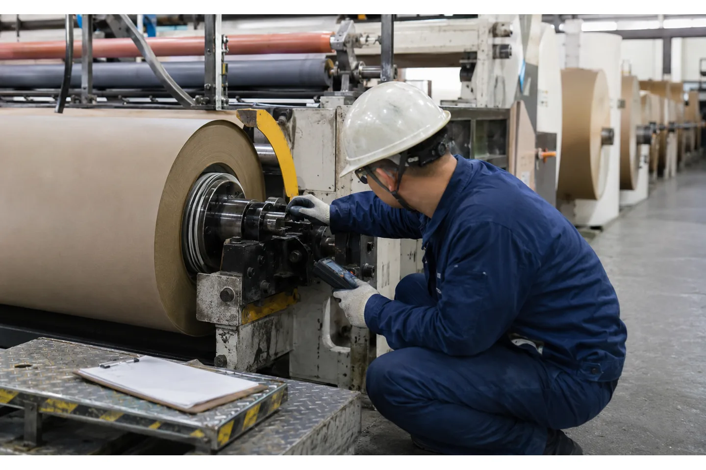

Published August 21, 2026 | By HDPTH Technical Editorial Team

Torque is often listed in a slitter-rewinder quotation as a motor or shaft capability, but production quality depends on how that torque is controlled while the roll grows. The same shaft torque produces a different web force at a small core and at a large finished diameter. If the control system does not account for that change, the roll can start too loose, finish too tight or vary from lane to lane.
For procurement, the important question is how the machine turns a desired web tension into a stable torque command under acceleration, diameter growth, shaft friction and material variation. That question also exposes whether the rewind shaft, differential elements, lay-on roller and drive system have been selected as one process.
Torque and tension are related, not interchangeable
At a simplified level, web tension is related to winding torque divided by the effective roll radius. As radius increases, a constant torque would tend to create a lower web force. In the real machine, shaft friction, inertia, slip, air entrainment, nip pressure and material stretch modify the result. The formula is a useful mental model, not a substitute for a measured control loop.
Ask the supplier to show which variable is commanded and which is measured. A load cell can provide direct web-tension feedback; a drive may calculate torque from motor current; a diameter sensor or length calculation may modify the target. The control description should explain how the signals interact and what happens when they disagree.
Why the rewind shaft changes the decision
A solid shaft, air shaft, differential shaft and friction shaft do not distribute torque in the same way. When several slit rolls share a shaft, small differences in strip thickness or roll diameter can cause different layers to wind with different forces. Differential elements allow controlled slip between lanes, but they add their own friction, pressure and maintenance variables.
Include core ID, core material, lane count, minimum slit width, roll weight, maximum diameter and the allowable widthwise variation in the RFQ. The differential-shaft guide can help structure the comparison, but the choice should be tested with your actual core and material. Ask for the shaft loading, torque range and lane-change procedure.
Control torque through the full winding cycle
A good rewind control sequence handles the new core, first wrap, steady winding, diameter growth, acceleration, deceleration, roll end and stop. The torque limit must protect the core and shaft while still holding the web flat. Taper tension may be implemented as a torque profile, a tension setpoint profile or a combination of feedback and feed-forward compensation.
Make the HMI show the values the operator needs: setpoint, actual tension or torque, estimated diameter, speed, active recipe and alarms. Hide low-level drive values behind maintenance access if necessary, but do not make production troubleshooting dependent on a supplier laptop. Data logging of a representative roll is valuable when diagnosing soft edges, telescoping or a core crush.

Consider the nip or lay-on roller at the same time
Torque is not the only force forming the roll. A lay-on roller or winding nip controls air entrainment and supports the outer layers. Too little nip can leave a soft roll; too much can compress the web or distort the profile. The correct pressure depends on material compressibility, speed, roll width and winding method.
When requesting a lay-on roller review, ask how pressure is controlled, whether it can taper with diameter, how the roller follows multiple finished rolls and how the operator verifies the setting. A torque curve without nip data is incomplete evidence of roll quality.
Write the torque-control RFQ
List the web material and thickness or GSM, width, core, roll OD, roll weight, slit widths, speed range, winding method, required tension range, desired roll profile and known defects. Ask for drive type, motor and shaft torque capacity, feedback device, diameter calculation, differential elements, brake or clutch functions and the usable adjustment range.
- Request a torque/tension trend for a roll from core to full diameter.
- Specify acceleration and deceleration behavior, not only steady-state speed.
- Define overload, overspeed, core and sensor alarms.
- State the maximum permitted roll temperature or rest condition if relevant.
- Ask what recipe and software backup are delivered at handover.
Need to explain a rewind problem clearly?
Send the roll drawing, core, material, speed and defect pattern. HDPTH can map torque, tension, shaft and nip variables into a measurable FAT.
Discuss your project with HDPTHFAT evidence: prove the curve and the roll
At FAT, run the hardest material and a representative mixed-width pattern. Record motor torque or the agreed equivalent, actual web tension, estimated diameter, speed, nip pressure and active recipe. Inspect roll end faces, hardness or firmness, telescoping, wrinkles and the downstream unwind. Repeat one job after a controlled changeover.
The FAT checklist should distinguish the measured drive response from the finished-roll acceptance. A drive can follow a torque curve while the roll still fails because the core, knife, guiding or material is wrong. Use both types of evidence before signing off.
Installation and commissioning checks
Torque control depends on correct motor data, encoder direction, shaft assembly, core engagement, sensor calibration and drive tuning. Check those items during dry run and low-speed commissioning before increasing speed. Verify the shaft does not bind, the differential elements have the correct air or pressure setting and the lay-on roller tracks the roll as diameter changes.
Prepare utilities and access with the site-preparation checklist. Keep the FAT trend beside the first production trend. If the local roll differs, compare material, core, recipe and measurement method before changing a drive parameter.
How HDPTH should scope rewind torque
HDPTH’s custom converting projects can be discussed around the customer’s roll dimensions, material and output. In the inquiry, make the rewind problem explicit: stable tension, differential lane balance, roll hardness, low-damage winding, fast changeover or a particular downstream unwind requirement. Link the problem to the data and test that will prove it.
Ask for a system diagram covering unwind, slitting, rewind, web guide and HMI trends. This helps the engineering team match the high-speed slitting equipment or nonwoven rewinding equipment to the actual torque and tension job.
Turn the requirement into an RFQ line item
Before comparing quotations for slitter rewinder rewind torque control: a buyer’s guide, put the operating requirement in a form that two suppliers can price and test in the same way. State the material family and its full working range, the parent-roll condition, the finished-roll drawing, the core, the number of lanes, the target speed and the changeover pattern. If the job includes more than one substrate, list each substrate separately instead of using a single average value.
- Define the quality result the plant must accept, such as edge condition, roll profile, web presence, winding stability or commissioning evidence.
- List the measurement method, sample size, inspection locations, conditioning time and who signs the result.
- Ask for the relevant tooling, sensor, tension, guiding, drive and guarding details in the supplier response.
- Require a FAT trial on representative material and a clear method for repeating the setup after cleaning, transport or a material change.
This structure helps procurement compare like with like and gives production, maintenance and quality teams a shared handover record. It also makes later troubleshooting faster: the team can see whether a result changed because of the material, the recipe, the measurement method or the machine. A concise requirement sheet is usually more valuable than a long list of headline specifications with no acceptance method.
Buyer FAQs
What is rewind torque on a slitter rewinder?
It is the turning effort applied to the rewind shaft or winding surface. The resulting web tension depends on torque, effective roll radius, friction, nip and material behavior.
Why must torque change as the roll grows?
Because the radius changes. A constant torque would not maintain the same web force through the winding cycle, so the control must use feedback, diameter compensation or a defined profile.
Does a higher torque rating mean better rolls?
No. A rating only indicates capacity. Roll quality depends on controllability, shaft and core matching, tension feedback, nip, guiding, material and the recipe used through the full cycle.
What should be recorded at FAT?
Record torque or the agreed control signal, actual tension, diameter, speed, nip pressure, recipe and finished-roll observations from core to full diameter and through a changeover.
Do differential shafts affect torque control?
Yes. Shared shafts and lane friction change how torque reaches each roll. Core, lane count, strip variation and differential-element settings should be included in the trial.
Sources
- DFE: Slitter-Rewinder Tension Control and taper tension
- Amtech Electronics: slitter-rewinder drives and winding tension
- Rosenthal Manufacturing: slitter rewinder, differential shafts and lay-on options
Specify rewind torque as part of the roll-quality system
Share your roll formats and desired tension or hardness profile with HDPTH. The quotation should define the drive, shaft, feedback and test evidence together.
Send an RFQ to HDPTH